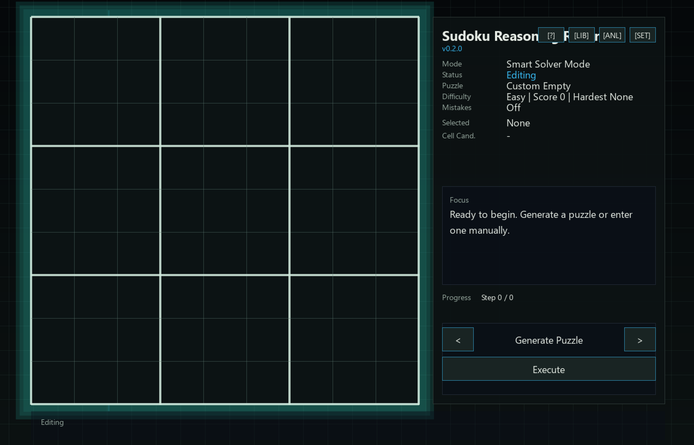

Visual Reasoning Playback
Replay solver decisions as highlighted cells, units, placements, contradictions, and backtracks.
Visual Sudoku reasoning engine
A visual Sudoku engine that turns hidden logic into motion.
Not just a solver. It visualizes how logic collapses uncertainty into certainty.
Latest release: v0.2.0. The stable release asset name is SudokuReasoningRadar_Windows.zip.
Visual preview
The interface highlights rows, columns, boxes, candidates, contradictions, and backtracks as the engine moves through a puzzle.

Features
Replay solver decisions as highlighted cells, units, placements, contradictions, and backtracks.
Follow human-style techniques before any guessing enters the picture.
Combine logic propagation with MRV search for a clear and reliable solve path.
Use an exact-cover engine when speed and uniqueness checks matter most.
Switch between focused, full, and hidden candidate displays to control visual density.
Create fresh puzzles by difficulty, with uniqueness checks and tracked seed metadata.
Ask for gentle, technique, or direct hints without revealing the whole solution path.
Score puzzles from the recorded solve trace, including hardest technique and branch depth.
Paste or type standard 81-character Sudoku strings in the in-app drawer, then import or copy puzzles without leaving the tool.
Highlight rule conflicts or compare player entries against a cached unique solution.
Save generated or imported puzzles locally in a simple text file format.
Replace the old button wall with one focused action, a short description, and a single Execute control.
Settings, analytics, library, import/export, generator, and shortcuts now live in clean drawer pages.
The board and current reasoning step stay central while lower-frequency tools stay tucked away.
The desktop interface adapts from compact windows to fullscreen displays.
Algorithm
Sudoku Reasoning Radar keeps the solver and animation layers separate. The engine records decisions; the interface turns those decisions into a readable sequence.
used = rowMask | colMask | boxMask
candidates = (~used) & 0x1FF
logic -> singles, pairs, locked candidates
search -> choose MRV cell, branch, verify
Interaction
Download
Latest release: v0.2.0
Requirements: Windows 10/11. SDL2 DLLs should be included in the release package.
Formal downloads are recommended through GitHub Releases. Keep the asset filename stable so the latest-release link keeps working.
Roadmap